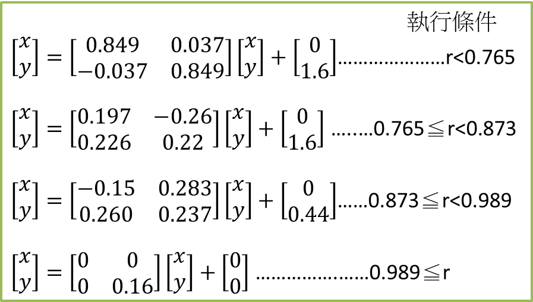

edited by 陳柏因

重要更新內容
- 2017/04/09_22:31: 2017/04/07內容更新
- 2017/04/09_22:31: VPYTHON_教學後.pptx檔案已上傳至ecampus
- 2017/03/24_10:50: 2017/03/24內容更新
- 2017/03/24_10:50: VPYTHON_教學.pptx檔案已上傳至ecampus
- 2017/03/17_11:05: 2017/03/17內容更新
※這個網站是提供給有修中興普通物理學的學生，學習python2.7.10版的參考資料使用。我會盡量把每次上課的內容都整理在這個網誌裡。上課我會用PPT和個人網頁搭配使用。這算是我第一次教課，上課的速度如果太快或是聽不懂我在說什麼的話，請多包涵，之後也可以跟我反應。課堂外要聯絡我就用facebook吧~
學python的理由，我想老師大概上課都說明了。對我而言因為我不必進行系統的維護，所以python大概就只是一個可以幫我做運算、整理數據或是做圖之類的工具。這個課大概只有6週的時間，所以只會說明一些基本的東西和程式碼編寫的概念，後面各位要製作專題的時候，應該會用到不少課堂上沒教過的指令，這些可能就要自己上網查詢怎麼使用或是問助教。
成績分配與作業繳交
- 作業10分和期末專題5分，共佔總成績15分
- 作業繳交狀況連結，如果有誤跟助教聯絡
- 程式執行的時間不得大於60秒，依情況做調整
- 作業請在隔週上課之前交，交上程式碼.py檔，至助教陳師漢的信箱(citrus2717@gmail.com)。
- 作業的檔案命名為410XXXXXXX(自己學號)+姓名-?.py，如「4102054036陳柏因-1.py」
- 郵件的主旨請打python_作業?，「python_作業一」
- 違反以上幾點造成助教不便者，後果自負
做作業的注意事項
基本上作業有問題都可以找助教討論，但請盡量不要直接說不會，或是甩一大串程式碼過來，然後說「程式怎麼跑不動?」，這樣我們會不知道怎麼引導各位思考。建議是還不習慣編寫程式的人可以使用附註的功能，標示自己到底寫了什麼，想一下為什麼程式是如何運行的。如果這樣還是不行的話，請盡快聯絡助教，幫你們debug。
計算程式執行的時間
由於第一次作業有部分的人製作出來的程式碼執行的時間過久，造成助教閱讀上的負擔。因此這邊教一下如何使用計算程式執行時間的function。如果想了解內部怎麼運作可以自己google或找助教。請以後交上來的功課都要附上程式運行的時間，輸出的時間不得大於60，會依情況做調整。
import time
tStart=time.time()
待測時間的程式碼
tEnd=time.time()
print 'total time='+str(tEnd-tStart)
只要最後輸出的 total time 小於60即可。
- 進入Python(x,y)
- 點選右上角的
 進入下載頁面
進入下載頁面
- 點選Python(x,y)-2.7.10.0.exe下載安裝檔
- 開啟安裝檔後，會進入Choose Users的介面，選擇Install just for me，接著點選Next
- 進入Choose Components的介面後，將Select the type of install那一欄改為Full，點Next就開始安裝
- 安裝完桌面應該會有
 ，點開它
，點開它
- 開啟後會出現如下圖的視窗，選擇紅黑圖案的鈕進入python

概念一
a=2
範例代表的意思即「把2這個值指定給a這個變數」。另一方面，可以利用另一個變數來與這個變數a做連結，例如b=a。此時b和a會被程式視作一體的，當b的數值更動時就會影響a，反之亦然。
概念二
a=a+3
意思是「a+3得到的值指定給a這個變數」。也就是說，假如原本a的值為2，那麼加上3之後就會得到5。程式把5這個值指定給a這個變數。
標示附註的文字大多是給programer看的，可作為筆記使用，電腦在運行程式碼的時候不會去讀取。附註的類型有兩種，一種是只附註一行的「#」，以及附註多行的「'''」，使用方法如下:
#附註一行
'''
附註多行
多行
'''
儲存資料有很多種方式，包含數字、數列、字串等等。不同類型的資料有時候不能直接做疊加或運算，需要將待處理的資料轉換成相同的類型，才能一起運算。資料之間的類型轉換方式如int(1.1)，就能把原本是浮點數的1.1轉換成整數形式的1。
以下我整理一下比較常用的幾種type。
數字
我以10為例，整數形式int(10)為10，而浮點數形式float(10)為10.0，接著以10.6為例，整數形式int(10.6)為10而浮點數float(10.6)為10.6。初學者容易犯的錯就是把兩個整數做運算後，得出的結果並非自己所想的。範例如下:
程式碼
print 3/6
顯示為
0
一般而言雖然我們知道3/6等於0.5，但在這邊程式認知你的運算都是整數的類型，因此他把答案0.5取整數，就是程式所顯示的0了。解決的方法很簡單，只要把運算改成3.0/6或3/6.0或是3.0/6.0就能顯示0.5了。
數列與矩陣
字串string
範例: print 'hello world!'
for迴圈是拿來執行固定次數的一個迴圈，執行的次數取決於你給的數列的長短。要特別注意的是在python裡使用像是for之類的工具時，必須使用縮排而非特殊字元或關鍵字來決定開始與結束。預設是用4個空白鍵(或是按一下Tab鍵)，來決定其內容包含哪些部分。範例如下:
程式碼
a=[1,3,5,7,9]
for i in a:
print i
print 'next'
輸出為
1
next
3
next
5
next
7
next
9
next
作業
- 安裝好python
- 找出5、-3.14、 [1,2,[1,2]]和'[2,4]'的type
- 用python寫一個費波那契數列，計算其第224項(第一項是0、第二項是1，接著是1,2,3,5,......)
- def function
function是一個能自己設定好功能，便於重複使用的一個工具。如果在程式碼中有一很常用到的計算式的話，也能自己利用def function，讓整個程式碼看起來更簡潔。以下為範例
def velocity(x1,x2):
y=x1*x2
return y
for t in range(5):
v=velocity(9.8,t)
print 't='+str(t)+'s','v='+str(v)+'m/s'
- import library
在python的世界裡，已經有許多人編寫好的函式可供引入並使用，如SciPy.org這裡面提供的，其中包含各種數學運算或繪圖等不同的功能。以下就來說明如何使用
- 載入函式庫並取代稱
使用的方式為「import 函式庫名稱 as 代稱」這樣的形式
範例:
import numpy as np
打上如上列式子的程式碼後，就完成引入函式庫的動作了。此時當我們要引用函式庫numpy中的函式pi的功能時，只要打np.pi。當然覺得取代稱很麻煩也可以直接打import numpy就好，而引入函式的形式就變為numpy.pi。
自動尋找函式位在哪個函式庫中
這個引入函式庫的方式比較偷懶。表示的方式是
「from 函式庫 import *」
範例:from numpy import *
這個指令會自動幫你搜尋你打的函式在哪個函式庫中，也就是本來要打np.pi的情況，你只要打pi就可以直接使用。這雖然對編寫者很方便，但會讓電腦多花一些時間尋找你的函式在哪個函式庫，程式執行的速度相比直接告訴他位置會來的慢。
直接從函式庫中引入函式
from numpy import pi,sin
a=sin(pi/2)
numpy
| 功能 |
範例 |
| 全零數列 |
np.zeros(2) |
| 全一數列 |
np.ones(3) |
| 全零矩陣 |
np.zeros((2,2)) |
| 呼叫矩陣中的元素 |
a[0,0] |
| 呼叫所有行 |
a[:,0] |
| 呼叫所有列 |
a[0,:] |
| 開根號 |
np.sqrt(5) |
| 新增元素 |
np.append(a,0) |
| 重排 |
a.reshape((3,2)) |
| π |
np.pi |
產生隨機數
r=rd.random()
洗牌
a=range(10)
rd.shuffle(a)
隨機矩陣
r=nrd.random((5,5))
判斷條件是通過判斷一個或多個語句的結果，並輸出True或False。判斷式中大概包含等於(==)、不等於(!=)、大於(>)、小於(<)和大於等於(>=)等種類。
當符合判斷式條件的時候，Python會給出True的回應，反之則為False。大家可以用以下程式碼進行嘗試
程式碼
print 1==1
print 1!=1
輸出為
True
False
另外如果有多個條件的話，則可以使用聯集(or)或是交集(and)的概念，範例如下
print 1==1 or 1!=1
結果為
True
條件語句指的是假設一些條件，符合條件(True)就執行code，不符合(False)就不執行。設定的條件可以不只一個，以下做個範例:
程式碼
a=[0,1,5,6,4,2]
for i in a:
if i<2:
print str(i)+'<2'
elif i<4:
print str(i)+'<4'
else:
print str(i)+' other'
這邊特別注意到其實在a數列中1是同時符合i<2以及i<4的條件，但是這邊程式只顯示符合i<2的結果。這是因為我們設定i<4這個條件是用elif，也就是else if，也就是不符合先前條件且符合elif設定的條件的時候就執行code，如果前面條件符合的話就不執行。而如果有要顯示「1 matches condition2」的話，就把elif i<4:改為if i<4:就行了。
作業
- 用def製作一個可以計算組合數的function
hint:以下的程式碼可以達到階層的效果
x=1.0
for i in range(1,5):
x=x*i
- 用scipy.misc這個library中的comb這個function，確認上一題的function是可行的(測試C5取2就好)
- 找出1~100中，2的倍數和3的倍數各有幾個
while語句使用上有點像條件語句結合for迴圈。以下為範例
程式碼
i=0
while i<3:
print i
i=i+1
輸出為
0
1
2
這組code表示的是當條件i<3符合的時候，就執行print 和i=i+1，一直執行到條件不符合i<3的時候就跳出while之外，執行下一步程式碼。
使用者輸入這個指令可以依據使用者輸入的資料，讓程式進行相應的動作，其中指令分為兩類，一個是輸入數字或字串等的input()，一個是將所有輸入值轉為字串的raw_input()，使用範例如下:
input程式碼
print a,type(a)
使用方法及結果如圖

點擊綠色框框的區塊，使用者就能給a一個數值(int, float...)或是字串(string)了
另一方面，使用指令raw_input的話，不管輸入的東西是哪一種，他都會將這些東西轉成字串。範例如下:
raw_input程式碼
print a,type(a)
輸入
4
輸出為
4 <type 'str'>
time是一個提供各種與時間相關的function(函式)的library(函式庫)，可用來記錄程式碼執行的時間，輸出的數字為以秒當作單位。
用clock function計時
import time as t
tstart=t.clock()
要執行的程式碼
tend=t.clock()
print 'The program takes '+str(tend-tstart)+' seconds.'
用time function計時
Homework
功能包含:
- 計時30s。超時程式就結束
- 產生隨機數給玩家猜
- 猜到數後，程式就會結束
hint1:
t=time.clock()可計錄程式執行的時間
n=random.randrange(1,100,1)會隨機產生一個在一到一百之間，以一為公差的數
break能中止while的進行
hint2(可用可不用):
關於input括號內的字，由於預設編碼的關係，只能顯示英文字，如果使用中文的話會顯示亂碼。
因此如果想要使用中文的話，可以在字串旁篇加上一個u，將編碼切換成能支援中文的編碼─unicode。
例如:
a=input(u'哈囉')
hint3(可加可不加):
程式執行完畢或是出現錯誤的時候，py檔通常是直接關閉了!
因此如果想保留畫面顯示遊戲結果的話，可以利用以下指令
q=0
while q==0:
q=raw_input('Input any key to quit: ')
矩陣運算
import numpy as np
a=np.matrix([[1,2],[3,4]])
b=np.matrix([[1,2],[3,4]])
c=a*b
print c
另一種方式是建立一個array後再用dot的指令進行矩陣運算。範例如下
import numpy as np
x=np.array([[1,2],[3,4]])
y=np.array([[1,2],[3,4]])
z1=x*y
z2=np.dot(x,y)
print 'z1='
print z1
print 'z2='
print z2
由範例的結果z1和z2我們可以觀察到，前者不使用dot的指令進行相乘的話，僅只有對應位置的元素相乘，而非我們所理解的矩陣乘法。當如後者使用dot的指令進行運算的話則為一般的矩陣運算。
取行列式值
np.linalg.det(a)
取反矩陣
np.linalg.inv(a)
全零矩陣
np.zeros((2,2))
全一矩陣
np.ones((2,2))
對角矩陣
np.eye(2)
呼叫所有行
a[:,0]
呼叫所有列
a[0,:]
靜圖的函式庫主要是使用matplotlib這個函式庫。首先將函式庫引入
import matplotlib.pyplot as plt
接著如果要畫一個2D圖的話，我們需要先建立兩個長度相同的數列，如
x=[1,2,3,4]
y=[4,5,2,3]
這兩個數列代表著2D圖上的每一個x座標與y座標，跟excel畫圖有類似。畫圖方式如下
plt.plot(x,y,'-o',label="note")
plt.legend()
plt.show()
第一條指令裡的第一和第二個元素代表x座標與y座標，第三個元素代表畫線的方式是用圓圈標示點並用線相連，第四個元素代表這條線的標籤(圖中右上角那個框框中的東西)。
而為了要在圖中建立右上角那個框框，我們需要使用第二條指令來建立
plt.xlabel('xlabel')
plt.ylabel('ylabel')
這樣你在括號中打的字串就會出現在圖中的座標軸旁邊了!
靜圖相關函式
plt.plot()的可添加功能
| 功能 |
範例 |
| 連結資料點的圖案 |
'-o' |
| 資料線或點的顏色 |
color=[0.2,0.3,0.4] |
| 資料標籤 |
label='string' |
標示坐標軸
plt.ylabel('string')
分割視窗
如果要畫第(5)張圖的位置輸入plt.subplot(235)
儲存圖片
範例:解 -cv-kx=ma，阻尼力+彈力=合力
v= x'= x對時間一次微分項，a= x''= x對時間二次微分項
使用上首先就是給定初始條件。例如說如果解到二次微分項的話，一次和零次微分項的初始值。接著準備一個function，輸入的值包含初始條件以及要計算的時間範圍，要回傳的值則是一次微分以及二次微分項。最後開始計算時，先令一個時間範圍，使用odeint()這個function，括號內依序置入剛剛設定的function、初始條件以及時間。
import scipy.integrate as sci
import numpy as np
import matplotlib.pyplot as plt
m=5 #(kg)
k=2 #(N/m)
c=1.5 #(Ns/m)
ic=[0,5] #initial condition=[x0(m),v0(m/s)]
def fun(inp,t):
#x0=inp[0],v0=inp[1]
out=[inp[1],(-c*inp[1]-k*inp[0])/m] #out=[x',x'']
return out
t=np.linspace(0.0,30.0,101) #(second)
x=sci.odeint(fun,ic,t) #sci.odeint(function,intitial condition,time)
plt.plot(t,x[:,0]) #x-t graph
最後輸出的x會是一個2 X n的陣列。第0行x[:,0]代表的是每個時間點的位置，第1行x[:,1]則代表的是每個時間點的速度。
Homework
- 用python畫出下圖

此圖形的相關資料:「碎形介紹」,「疊代函數系統IFS」,「ICM 2006 Benoit Mandelbrot 碎形藝術競賽」
hint1:
因為這題作業進行的迴圈數有5000多次，因此程式在運行上會稍微慢一點正常的現象
hint2:
在使用if的時候，千萬不要像平常數學上使用的2<x<3直接丟入條件語句裡，雖然程式上是可以解讀的，但跟他的概念是先判斷2<x的結果，例如說是True，接著變成判斷True<3，得到結果True，這樣的結果。因此為了避免這種狀況發生，請使用聯集(&)的功能
如if 2<x and x<3:。
參考參數:

- 解二維座標下-cvr-kr=mar
m=5kg
cx=1.5Ns/m
cy=2.0Ns/m
kx=2.0Ns/m
ky=1.5Ns/m
起始位置座標為(0,0)m，起始速度為(10,10)m/s
畫出從0到30秒間，此點的行經路徑，即各時間點y位置對x位置的圖。
- 補充(非作業，看看就好):
這邊就大概解釋一下IFS在做什麼。這個方法主要的目的是藉由不斷地縮放、旋轉以及平移，使原本相異的起始圖案最後會逐漸趨於一個穩定的形式。縮放以及旋轉依靠的就是縮放和旋轉矩陣來控制，平移則是替x和y加減一個值即可。
基本上要用IFS製作碎形圖的時候會有一個目標圖形，這個圖形越複雜，他的子圖形就會越多(如葉子就有四個子圖形，包含主葉片、左葉片、右葉片以及他的莖)，每個子圖形所佔的比例不同會連帶影響最後的結果。
其中最直接影響輸出結果的應該屬於縮放的部分，因此子圖形佔的比例為各個矩陣的行列式值比。可以看見在作業一中使用的r=random.random.rand()功能是作為機率使用的，以此讓比例高的子圖形佔有更大的機率進行疊代，讓圖形的分布符合所求的圖形。
另外再介紹一個不同於作業一的IFS製作碎形圖的方法，此種製圖方法是使用牛頓法製作。範例中為以牛頓法在複數空間下解z3-1=0這條方程式，並以不同顏色標示每個猜解的點最後收斂在此方程式的各個解。
注意:以下程式碼運算量極大(跑圖的時候看起來當掉的那種)，要嘗試的人可以先把所有np.arange(-1,1,0.015)改用np.arange(-1,1,0.02)做測試。
import matplotlib.pyplot as plt
import numpy as np
for i in np.arange(-1,1,0.015):
for j in np.arange(-1,1,0.015):
n=complex(i,j)
erro=1
x=n
while erro>1e-4:
xn=x-( (x**3)-1 )/(3*(x**2))
erro=abs(xn-x)
x=xn
if abs(x-complex(1,0))<1e-3:
c='red'
if abs(x-complex(-0.5,np.sqrt(3.0/4)))<1e-3:
c='yellow'
if abs(x-complex(-0.5,-np.sqrt(3.0/4)))<1e-3:
c='blue'
plt.plot(n.real,n.imag,'.',color=c)
plt.show()
要學習Vpython要怎麼用的話，基本上可以參考Vpython、Vpython Help和VPhysics NTU這些網站就好。裡面也沒什麼太難的技巧，就只是在將各種參數輸入模型裡就行。
參數表
from visual import *
'''
ball=sphere()
ball.color=color.red
ball.pos=(-5,0,0)
ball.radius=0.5
'''
'''
wall = box()
wall.color = color.green
wall.size = (0.2,4,4)
wall.pos=(6,0,0)
'''
'''
v1 = vector(1,2,3)
v2 = vector(2,1,5)
print v1.x,v1.y,v1.z
'''
'''
ball=sphere()
ball.pos=(-5,0,0)
ball.radius=0.5
wall1 = box()
wall1.color = color.green
wall1.size = (0.2,4,4)
wall1.pos=(6,0,0)
wall2 = box()
wall2.color = color.green
wall2.size = (0.2,4,4)
wall2.pos=(-6,0,0)
ball.velocity = vector(2,0,0)
while (1==1):
rate(100)
dt = 0.05
ball.pos = ball.pos + ball.velocity*dt
if ball.x > wall1.x:
ball.velocity.x = -ball.velocity.x
if ball.x < wall2.x:
ball.velocity.x = -ball.velocity.x
'''
#sphere()
#box()
#cylinder()
#arrow()
#ellipsoid()
#helix()
#sphere(pos=(-1,0,0),radius=0.5,color=color.green)
#arrow(pos=(-1,0,0),axis=(+1,+3,0),color=color.red)
#c=curve(pos=(1, 0, 0))
#for i in arange(0, 10, 0.1):
# c.append(pos=(cos(i), sin(i), i))
#c = gcurve()
#for i in arange(0, 10, 0.1):
# c.plot(pos = (i, cos(i)))
二維碰撞
from visual import *
size = 0.1
scene = display(width=800, height=800, background=(0.5,0.5,0))
b1 = sphere(radius = size, color=color.yellow)
b2 = sphere(radius = size, color=color.green)
b1.pos = vector( 0.6 , 0.1, 0)
b2.pos = vector( 0 , 0 , 0)
b1.v = vector(-0.2, 0, 0)
b2.v = vector(0 , 0, 0)
dt = 0.001
while True:
rate(1000)
b1.pos += b1.v * dt
b2.pos += b2.v * dt
if abs(b1.pos - b2.pos)>=2*size and dot(b1.v, b2.v) >= 0 :
v1prime = b1.v - (b1.pos-b2.pos) * dot (b1.v-b2.v, b1.pos-b2.pos) / abs(b1.pos-b2.pos)**2
v2prime = b2.v - (b2.pos-b1.pos) * dot (b2.v-b1.v, b2.pos-b1.pos) / abs(b2.pos-b1.pos)**2
b1.v, b2.v = v1prime, v2prime
Homework
1.試著改動二維碰撞中的參數，runrun看哪裡不一樣
2.將二維碰撞程式碼用”#”註解
from visual import *
g = 9.8
size = 0.05
r = 0.5
k = 10
m = 0.2
'-----------------------------------------------------------------------------'
scene = display(width=800, height=800, center=(0, -r*0.6, 0), background=(0.5,0.5,0))
ceiling = box(length=0.8, height=0.005, width=0.8, color=color.blue)
ball = sphere(radius = size, color=color.red)
spring = helix(radius=0.02)
ball.pos0 = vector(0, -r, 0)
ball.pos = vector(0, -r , 0)
ball.v = vector(0, 0, 0)
'------------------------------------------------------------------------------'
dt = 0.001
while True :
rate(1000)
spring.axis = ball.pos - spring.pos
ball.a = vector(0, - g - k * (ball.pos.y - ball.pos0.y )/m , 0)
ball.v += ball.a*dt
ball.pos += ball.v*dt
二維碰撞
from visual import *
size = 0.1
scene = display(width=800, height=800, background=(0.5,0.5,0))
b1 = sphere(radius = size, color=color.yellow)
b2 = sphere(radius = size, color=color.green)
b1.pos = vector( 0.6 , 0.1, 0)
b2.pos = vector( 0 , 0 , 0)
b1.v = vector(-0.2, 0, 0)
b2.v = vector(0 , 0, 0)
dt = 0.001
while True:
rate(1000)
b1.pos += b1.v * dt
b2.pos += b2.v * dt
if abs(b1.pos - b2.pos)<=2*size and dot(b1.v, b2.v) <= 0 :
v1prime = b1.v - (b1.pos-b2.pos) * dot (b1.v-b2.v, b1.pos-b2.pos) / abs(b1.pos-b2.pos)**2
v2prime = b2.v - (b2.pos-b1.pos) * dot (b2.v-b1.v, b2.pos-b1.pos) / abs(b2.pos-b1.pos)**2
b1.v, b2.v = v1prime, v2prime
彈簧運動向量
from visual import *
g = 9.8
size = 0.05
r = 0.5
k = 10
m = 0.2
scene = display(width=800, height=800, center=(0, -r*0.6, 0), background=(0.5,0.5,0))
ceiling = box(length=0.8, height=0.005, width=0.8, color=color.blue)
ball = sphere(radius = size, color=color.red)
spring = helix(radius=0.02)
ball.pos0 = vector(0, -r, 0)
ball.pos = vector(0, -r , 0)
ball.v = vector(0, 0, 0)
ball_v_arrow = arrow(shaftwidth = 0.01)
ball_a_arrow = arrow(shaftwidth = 0.01) #軸
dt = 0.001
while True:
rate(100)
spring.axis = ball.pos - spring.pos
ball.a = vector(0, - g - k * (ball.pos.y - ball.pos0.y )/m , 0)
ball.v += ball.a*dt
ball.pos += ball.v*dt
ball_v_arrow.pos = ball.pos + vector(size, 0, 0)
ball_v_arrow.axis = ball.v / 5.0
ball_a_arrow.pos = ball.pos - vector(size, 0, 0)
ball_a_arrow.axis = ball.a / 50.0
Homework
試著用彈簧運動模型，做出阻尼運動模型出來。
Hint: 可以利用作業四的運動方程式，把運動公式寫出來
請記得 # 詳記註解